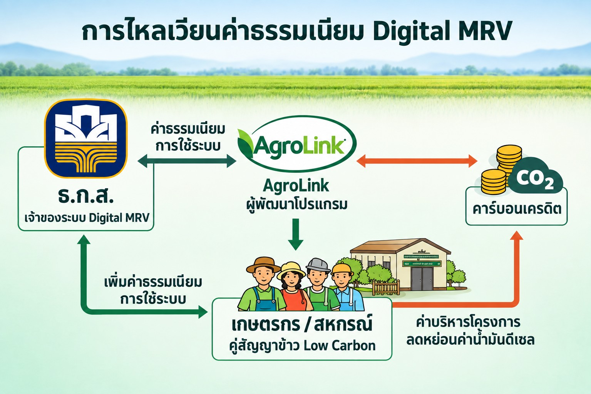

ทำความเข้าใจว่าทำไมนาข้าวจึงเกี่ยวข้องกับก๊าซเรือนกระจก เทคนิค "เปียกสลับแห้ง" (AWD) ช่วยลดการปล่อยก๊าซได้อย่างไร และคาร์บอนเครดิตที่ซื้อขายได้จริงเกิดขึ้นจากกลไกแบบไหน — ก่อนเข้าใช้เครื่องมือบันทึกข้อมูลจริงของ AgroLink

สภาวการณ์ของตลาดคาร์บอนเครดิตภาคสมัครใจของประเทศไทย ในช่วงปีงบประมาณ 2563-2568 สะท้อนถึงพัฒนาการที่น่าสนใจในมิติของราคาและปริมาณ โดยหากย้อนรอยสถิติจะพบว่าตลาดเคยผ่านจุดสูงสุดในปี 2565 ซึ่งมีปริมาณการซื้อขายสูงถึง 1.18 ล้านตันคาร์บอนไดออกไซด์เทียบเท่า (MtCO₂eq) จากกระแสการตื่นตัวของการกำหนดเป้าหมาย Net Zero ของแต่ละประเทศหลังการประชุม COP26 ที่กระตุ้นให้ภาคธุรกิจเร่งกักตุนเครดิตในราคาที่ยังอยู่ในระดับต่ำ อย่างไรก็ตาม ในปี 2566-2567 ตลาดเข้าสู่ช่วงปรับฐาน (Market Correction) โดยปริมาณการซื้อขายลดลงมาอยู่ที่ระดับประมาณ 6-8 แสนตันคาร์บอนไดออกไซด์เทียบเท่าต่อปี แต่สิ่งที่น่าจับตามองคือ ราคาเฉลี่ยต่อหน่วย ที่ปรับตัวสูงขึ้นอย่างมีนัยสำคัญ จากราคาเฉลี่ยทั้งตลาดเพียงไม่กี่สิบบาทพุ่งขึ้นมาอยู่ในช่วง 80–125 บาทต่อตันคาร์บอนไดออกไซด์เทียบเท่า หรือประมาณ 2.5-4 US$/tCO₂eq และในบางกลุ่มโครงการที่มีคุณภาพสูงอย่าง "ภาคป่าไม้" ราคาเฉลี่ยอยู่ที่ 279.06 บาทต่อตันคาร์บอนไดออกไซด์เทียบเท่า หรือประมาณ 8.7 US$/tCO₂eq โดยราคาเคยทะยานไปถึง 3,000 บาทต่อตันคาร์บอนไดออกไซด์เทียบเท่า หรือประมาณ 93 US$/tCO₂eq สะท้อนว่าผู้ซื้อไม่ได้ให้ความสำคัญเพียงแค่ปริมาณการชดเชย แต่เริ่มพิจารณาถึงความพรีเมียม คุณภาพสูง และผลประโยชน์ร่วม (Co-benefits) ของโครงการมากขึ้น
เมื่อเจาะลึกเชิงโครงสร้างอุปสงค์และอุปทาน ข้อมูลล่าสุดระบุว่าโครงการด้านพลังงานหมุนเวียน (ชีวมวลและแสงอาทิตย์) ยังคงเป็นอุปทานหลักของตลาดเนื่องจากต้นทุนการพัฒนาที่คุ้มค่ากว่า แต่ในฝั่งอุปสงค์ ความต้องการกลับเทไปหาเครดิตประเภท Carbon Removal หรือการกักเก็บคาร์บอนจากธรรมชาติ (Nature-based Solutions) เช่น ป่าไม้และเกษตรกรรมยืนต้น ซึ่งมีซัพพลายจำกัดและใช้ระยะเวลานานในการผลิต ความไม่สมดุลนี้ส่งผลให้ราคาเครดิตป่าไม้สูงกว่าเครดิตด้านพลังงานถึง 3-5 เท่าตัว ขณะเดียวกัน อุปสรรคสำคัญที่ตลาดกำลังเผชิญคือความไม่แน่นอนในการเข้าถึงตลาดของ SMEs และข้อจำกัดด้านองค์ความรู้และงบประมาณสำหรับองค์กรขนาดเล็กในการพัฒนาโครงการ แต่ในภาพรวมระดับประเทศ การผลักดันพระราชบัญญัติการเปลี่ยนแปลงสภาพภูมิอากาศ พ.ศ.... (หรือพ.ร.บ. โลกร้อน) ที่กำลังจะเกิดขึ้น จะเปลี่ยนโฉมหน้าจากตลาดภาคสมัครใจ (Voluntary) ไปสู่ตลาดภาคบังคับ (Compliance) มากขึ้น ซึ่งจะเป็นแรงขับเคลื่อนมหาศาลที่ทำให้ตลาดคาร์บอนไทยเติบโตอย่างก้าวกระโดดในอนาคตอันใกล้
ปีงบประมาณ 2568 ที่ผ่านมา ตลาดคาร์บอนเครดิตไทยเข้าสู่ช่วง Market Realignment หรือการปรับสมดุลตลาดอย่างแท้จริง แม้ในเชิงปริมาณจะดูชะลอตัวลงเมื่อเทียบกับปี 2565 ที่มีการซื้อกักตุนเป็นจำนวนมาก แต่มิติของราคา กลับแสดงสัญญาณบวกอย่างมีนัยสำคัญ สะท้อนว่าผู้ซื้อในตลาดปัจจุบันคือผู้ใช้งานจริง (End-users) ที่ต้องการชดเชยคาร์บอนเพื่อเป้าหมาย ESG และ Net Zero ไม่ใช่กลุ่มที่เข้ามาเก็งกำไรเหมือนในอดีต ภาคป่าไม้ยังคงเป็นกลุ่มพรีเมียมที่ตลาดโหยหา โครงการ P-REDD+ แม้ปริมาณจะมีไม่มากแต่ครองสัดส่วนมูลค่าตลาดสูงสุด ภาคพลังงานหมุนเวียนเป็นกลุ่มที่มีปริมาณการซื้อขายหนาแน่นที่สุด โดยเฉพาะชีวมวล (Biomass) ที่มียอดซื้อขายกว่า 1.3 แสนตัน ในช่วงราคา 35-500 บาทต่อตันคาร์บอนไดออกไซด์เทียบเท่า ตามด้วยพลังงานแสงอาทิตย์
การยกระดับให้สอดคล้องกับมาตรฐานสากล (CORSIA หรือ Article 6 ของความตกลงปารีส) จะทำให้คาร์บอนเครดิตไทยส่งออกหรือขายให้องค์กรต่างประเทศได้ในราคาสูงขึ้น
ราคาจะขยับตัวสูงขึ้นต่อเนื่องตามต้นทุนการลดก๊าซเรือนกระจกที่ยากขึ้น (Marginal Abatement Cost) อาจทำให้ราคาเฉลี่ยแตะ 300–500 บาทต่อตันภายใน 3 ปีข้างหน้า
จะเห็นผลิตภัณฑ์ทางการเงินที่อิงกับคาร์บอนเครดิตมากขึ้น เช่น Carbon Credit Link Loan ซึ่งจะช่วยเสริมสภาพคล่องให้กับตลาด
สรุปได้ว่า ตลาดคาร์บอนไทยกำลังเปลี่ยนผ่านจากช่วง "ทดลองและเรียนรู้" เข้าสู่ช่วง "เติบโตอย่างยั่งยืน" โดยมีกลไกราคาที่เป็นธรรมและการรับรองที่เข้มงวดเป็นหัวใจสำคัญในการขับเคลื่อนประเทศไทยสู่เป้าหมาย Carbon Neutrality และ Net Zero ในปี 2050 ต่อไป
ที่มา: ศูนย์ซื้อขายคาร์บอนเครดิตไทย, องค์การบริหารจัดการก๊าซเรือนกระจก (TGO) — carbonmarket.tgo.or.th
นาข้าวแบบทำน้ำขังตลอดฤดูปลูก (continuous flooding) สร้างสภาวะไร้ออกซิเจนในดิน ซึ่งเหมาะกับแบคทีเรียกลุ่มที่ผลิตก๊าซมีเทน (methanogens) ในการย่อยสลายอินทรียวัตถุ ก๊าซมีเทนที่เกิดขึ้นจึงถูกปล่อยออกจากแปลงนาอย่างต่อเนื่องตลอดฤดูปลูก
ในภาพรวมระดับโลก การปลูกข้าวแบบทำน้ำขังคิดเป็นสัดส่วนราวร้อยละ 11 ของการปล่อยก๊าซมีเทนทั้งหมด หรือประมาณ 1 พันล้านตันต่อปี และก๊าซมีเทนมีศักยภาพในการกักเก็บความร้อนสูงกว่าก๊าซคาร์บอนไดออกไซด์ราว 85 เท่า เมื่อคำนวณในกรอบเวลา 20 ปี นาข้าวจึงเป็นหนึ่งในเป้าหมายสำคัญของความพยายามลดก๊าซเรือนกระจกภาคเกษตรทั่วโลก รวมถึงในประเทศไทยที่มีพื้นที่นาข้าวขนาดใหญ่
แทนที่จะขังน้ำในแปลงตลอดฤดู เทคนิค AWD ปล่อยให้น้ำในแปลงแห้งลงถึงระดับหนึ่งก่อนสูบน้ำกลับเข้าแปลงใหม่ วนเป็นรอบๆ ตลอดฤดูปลูก
วิธีวัดที่ใช้กันทั่วไปคือการปักท่อวัดระดับน้ำ (มักเป็นท่อ PVC เจาะรู) ลงในดินบริเวณแปลงนา แล้วสังเกตระดับน้ำผ่านท่อ เมื่อระดับน้ำลดลงถึงจุดที่กำหนด (แนวทางที่ใช้กันทั่วไปอยู่ที่ประมาณ 15 ซม. ต่ำกว่าผิวดิน แล้วแต่ชนิดดินและคำแนะนำในแต่ละพื้นที่) จึงสูบน้ำกลับเข้าแปลงจนท่วมขังอีกครั้ง แล้ววนซ้ำไปเรื่อยๆ ยกเว้นช่วงวิกฤต เช่น ช่วงออกดอก ที่ยังต้องรักษาระดับน้ำให้สม่ำเสมอตามปกติ การปล่อยให้ดินแห้งเป็นระยะแบบนี้จะรบกวนวงจรของแบคทีเรียที่ผลิตมีเทน ทำให้ปริมาณก๊าซมีเทนที่ปล่อยออกมาลดลงอย่างมีนัยสำคัญ โดยไม่ต้องเปลี่ยนพันธุ์ข้าวหรือวิธีปลูกอื่นๆ
การลดก๊าซเรือนกระจกจะกลายเป็น "คาร์บอนเครดิต" ที่ซื้อขายได้จริง ก็ต่อเมื่อผ่านกระบวนการวัด รายงาน และทวนสอบ (Measurement, Reporting, Verification — MRV) ตามระเบียบวิธี (methodology) ที่หน่วยงานรับรองยอมรับ โดย 1 คาร์บอนเครดิตเทียบเท่ากับก๊าซเรือนกระจกที่ลดหรือหลีกเลี่ยงได้จริง 1 ตันคาร์บอนไดออกไซด์เทียบเท่า (tCO2e) ในระดับสากลมีระเบียบวิธีสำหรับนาข้าวโดยเฉพาะ เช่น VCS VM0042 และ VM51 ของ Verra และระเบียบวิธี Methane Emission Reduction in Rice Cultivation ของ Gold Standard ซึ่งล้วนใช้หลักการเปรียบเทียบการปล่อยก๊าซจากแปลงที่ทำ AWD กับแปลงอ้างอิงที่ขังน้ำตามปกติ (baseline) เพื่อคำนวณส่วนต่างที่ลดได้จริง
กลไกคาร์บอนเครดิตภาคสมัครใจของไทย ที่เกษตรกร กลุ่มเกษตรกร หรือสหกรณ์ที่ทำนาแบบลดก๊าซเรือนกระจกสามารถเข้าร่วมได้
T-VER (Thailand Voluntary Emission Reduction Program) คือโครงการลดก๊าซเรือนกระจกภาคสมัครใจของไทย พัฒนาและบริหารโดยองค์การบริหารจัดการก๊าซเรือนกระจก (องค์การมหาชน) หรือ อบก./TGO ผู้ที่ลดก๊าซเรือนกระจกได้จริงตามระเบียบวิธีที่ อบก. รับรอง สามารถขึ้นทะเบียนโครงการและขอออกคาร์บอนเครดิต (T-VER) เพื่อซื้อขายในตลาดคาร์บอนภาคสมัครใจภายในประเทศได้
ต้องขึ้นทะเบียนโครงการกับ อบก. ภายใต้ระเบียบวิธีที่ได้รับอนุมัติ เก็บข้อมูลตามรอบ (เช่น บันทึกระดับน้ำ AWD ต่อรอบปลูก) แล้วผ่านการตรวจสอบและทวนสอบ (validation/verification) โดยผู้ประเมินภายนอกที่ อบก. ขึ้นทะเบียนไว้ ก่อนจะได้รับคาร์บอนเครดิตที่ซื้อขายได้จริง โดยทั่วไปเกษตรกรรายย่อยมักเข้าร่วมผ่านการรวมกลุ่ม เช่น สหกรณ์ หรือผู้พัฒนาโครงการ (project developer) แทนการยื่นเรื่องเดี่ยว เนื่องจากมีต้นทุนการทวนสอบต่อโครงการ
เกษตรกรที่ทำนาข้าวและต้องการเริ่มบันทึกรอบเปียกสลับแห้ง (AWD) เพื่อประเมินคาร์บอนเครดิตเบื้องต้น สามารถเข้าใช้งานเครื่องมือของ AgroLink ได้ทันที (ต้องเข้าสู่ระบบเกษตรกรก่อน)